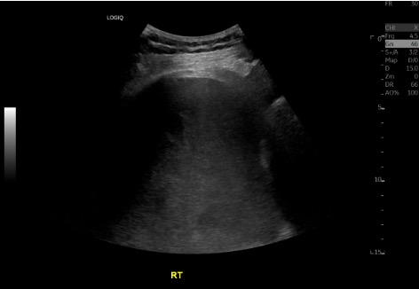
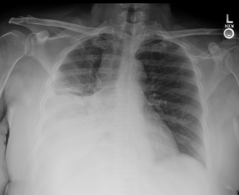
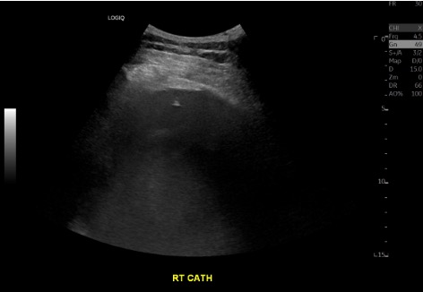
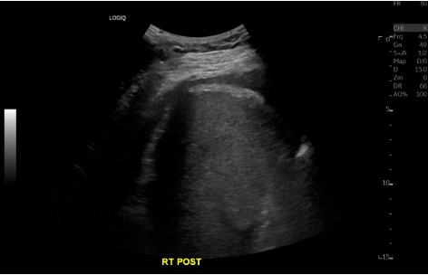
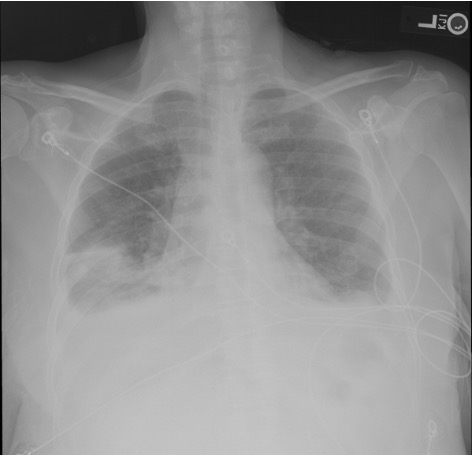

Indications / Contraindications
Indications
- Diagnostic: New unilateral effusion of unclear etiology — fluid analysis to differentiate transudate vs. exudate (Light's criteria)
- Therapeutic: Symptomatic large effusion causing dyspnea — remove up to 1–1.5 L for relief
- Suspected empyema or complicated parapneumonic effusion — obtain pH, glucose, cell count, culture
- Suspected malignant effusion — cytology (sensitivity ~60–75% with adequate volume)
- New effusion in cirrhotic patient — rule out spontaneous bacterial empyema
Contraindications
- Absolute: No safe access window on US · Patient unable to cooperate or be positioned
- Relative: Overlying cellulitis/herpes zoster · Severe coagulopathy (INR >3.0 or platelets <20K per SIR) · Mechanical ventilation (increased pneumothorax risk — use real-time US) · Single functioning lung on contralateral side
- Note: Per BTS guidelines, the only absolute contraindication is patient refusal. Coagulopathy and anticoagulation are relative and should be weighed against clinical need
Pre-Procedure Checklist
Relevant Anatomy
Access Site
- Ideal location: Posterior chest wall, between the posterior axillary line and midscapular line, 1–2 interspaces below the effusion level
- Patient seated upright — insert needle in the intercostal space just above the superior margin of the lower rib (avoids neurovascular bundle)
- Never below the 8th intercostal space posteriorly to avoid subdiaphragmatic organs (liver R, spleen L)
- Lateral approach (mid-axillary line) is an alternative if posterior approach unavailable
- Always confirm with US — the landmark guides initial probe placement, but final access is determined by the largest safe fluid pocket
Danger Structures
- Intercostal neurovascular bundle: Runs along the inferior margin of each rib (vein, artery, nerve). Always access above the rib, not below
- Aberrant intercostal arteries: In elderly patients, vessels can course more medially in the intercostal space — use Color Doppler to map before access
- Diaphragm: Mark the apex at end-expiration with US. Never puncture below this level
- Subdiaphragmatic organs: Liver (R), spleen (L) — confirm with US sweep below diaphragm
- Lung parenchyma: Identify atelectatic lung floating in fluid — do not advance needle into reexpanding lung
How I Do It
Default RadCall approach + community cards
Supplies
Steps
Position + US survey


Prep + drape
Local anesthesia
Access

Diagnostic sample
Therapeutic drainage
Completion


Troubleshooting
No fluid return / dry tap
Likely cause: Needle not deep enough, loculated effusion, or patient repositioned since marking.
Next step: Re-image with US in real-time. Confirm pocket is still present at the access site. Adjust depth or angle. If loculated, select a different pocket or consider IR-guided drainage with CT.
Bloody aspirate
Likely cause: Traumatic tap (intercostal vessel laceration), hemorrhagic effusion (malignancy, PE, trauma), or hemothorax.
Next step: Send fluid hematocrit. If aspirate Hct is >50% of serum Hct, consider hemothorax — stop procedure and consult surgery. If <1% of serum Hct, likely traumatic. Bloody fluid that does not clot suggests long-standing hemorrhagic effusion (malignancy).
Patient develops cough or chest tightness during drainage
Likely cause: Lung reexpansion stimulating pleural receptors, or early reexpansion pulmonary edema.
Next step: Stop drainage immediately. This is the most important indicator to terminate the procedure. Monitor vitals and oxygen saturation. Perform bedside US to check for pneumothorax. If cough resolves and patient is stable, may cautiously resume with slower drainage rate.
Loculated effusion — unable to drain completely
Likely cause: Fibrinous septations within pleural space (parapneumonic, empyema, malignancy).
Next step: Consider chest tube placement with intrapleural fibrinolytic therapy (tPA 10 mg + DNase 5 mg BID × 3 days). Alternatively, CT-guided access for loculated pockets. VATS may be needed for organized collections.
Complications
Immediate
- Pneumothorax (2–6%) — most common complication; US-guided rate ~3% vs. ~18% blind; usually pneumothorax ex vacuo (non-expandable lung), not air leak
- Bleeding / hemothorax (<1%) — intercostal vessel laceration; may require embolization of intercostal artery
- Pain — at insertion site or pleuritic; ensure adequate local anesthesia at parietal pleura
- Vasovagal reaction — especially in seated patients; have patient lie down if symptomatic
Delayed
- Reexpansion pulmonary edema (RPE) — rare but potentially fatal; risk increases with >1.5 L drainage, rapid removal, or use of high negative pressure. Can occur 12–72h post. Presents with cough, dyspnea, frothy sputum, ipsilateral pulmonary edema on CXR
- Organ injury — liver (R), spleen (L), diaphragm perforation if access too low
- Infection / empyema — rare with sterile technique
- Pneumothorax ex vacuo — trapped lung fails to reexpand; creates negative intrapleural pressure; self-limited, usually does not require chest tube
Post-Procedure Care
Monitoring
- Monitor vitals and oxygen saturation for 1–2 hours
- Post-procedure US at bedside: confirm lung sliding to rule out pneumothorax
- Routine post-procedure CXR is NOT required for uncomplicated thoracentesis — obtain only if symptomatic (new dyspnea, chest pain, desaturation)
- Document fluid color, clarity, and total volume removed
- Monitor for RPE signs: cough, dyspnea, desaturation up to 24–72h post
Reexpansion Pulmonary Edema Prevention
- Limit drainage: No more than 1–1.5 L in first-time/naive patients
- Stop if symptomatic: Cough, chest tightness, or dyspnea = stop immediately
- Low negative pressure: Use <−20 cm H₂O during drainage
- Slow drainage: Favor gradual removal over rapid high-volume aspiration
- Anticoagulation: Resume 24 hours post-procedure (earlier if high thrombotic risk)
Critical Pearls
Fluid Analysis Reference
Light's Criteria — Exudate if ANY one met
- Pleural fluid protein / serum protein > 0.5
- Pleural fluid LDH / serum LDH > 0.6
- Pleural fluid LDH > ⅔ the upper normal limit of serum LDH
| Test | Transudate | Exudate |
|---|---|---|
| Appearance | Serous, clear | Cloudy, turbid, bloody, or purulent |
| Leukocyte count | <10,000/mm³ | >50,000/mm³ (empyema) |
| pH | >7.4 | <7.2 = high risk CPPE/empyema → consider drain |
| Protein | <3.0 g/dL | >3.0 g/dL |
| LDH | <200 IU/L | >200 IU/L (↑ with infection, malignancy) |
| Glucose | ≥60 mg/dL | <60 mg/dL (infection, RA, malignancy); <40 = empyema |
| Amylase | Normal | Elevated: esophageal rupture, pancreatitis, malignancy |
| Triglycerides | — | >110 mg/dL = chylothorax (lymphatic disruption) |
| Hematocrit | — | Pleural Hct >50% serum = hemothorax |
| Cytology | — | Malignant cells; sensitivity ~60–75% (improves with volume >60 mL) |
| Gram stain / culture | — | Inoculate blood culture bottles at bedside for best yield |
Common Etiologies
Transudative
- Congestive heart failure (most common)
- Cirrhosis / hepatic hydrothorax
- Nephrotic syndrome
- Hypoalbuminemia
Exudative
- Pneumonia / parapneumonic
- Malignancy (lung, breast, lymphoma)
- Pulmonary embolism
- TB / autoimmune (RA, lupus)